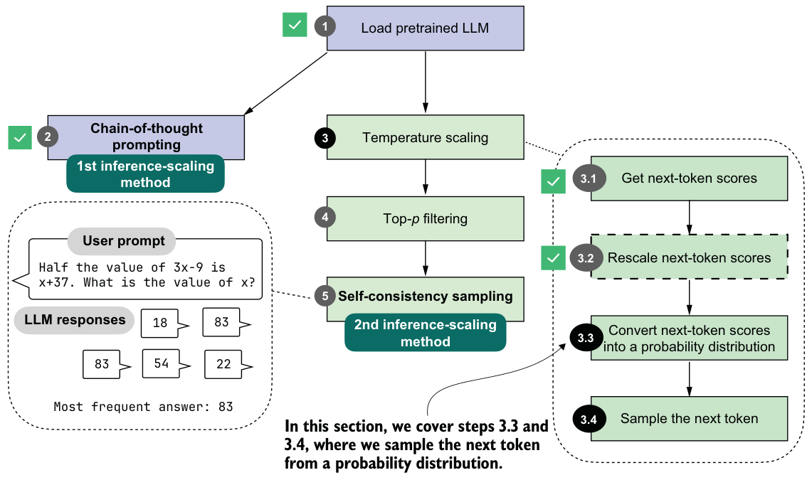
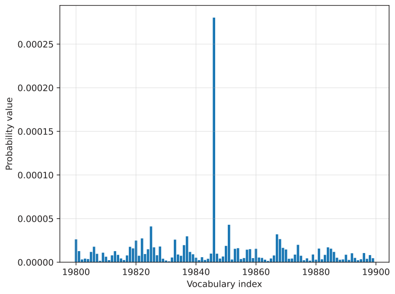

4.4.3Sampling the next token from a probability distribution
In the previous section, we rescaled the logit values with different temperature values. This lets us influence how the model selects the next token. Before we get to the next-token sampling portion in the next section, we’ll add one more intermediate step: converting the rescaled logits into probability scores, as shown in figure 4.10.
To demonstrate how rescaled logits are converted into probability scores (step 3.3 of figure 4.10), we’ll use a temperature of 5.0, which will make it easier to visualize the resulting probabilities in a plot. The " Berlin" token, for example, has such a high logit value that it would otherwise dominate the scale, making it difficult to see the probabilities of the surrounding tokens.
The conversion from rescaled logits to probability scores can be done with a single function call, torch.softmax, as shown in the following listing.
rescaled_logits = scale_logits_by_temperature(next_token_logits, 5.0)
next_token_probas = torch.softmax(
rescaled_logits, dim=-1
)This torch.softmax function normalizes the logit values to the range from 0 to 1, such that they sum to 1. We can confirm that with the following code:
print("Probability sum:", torch.sum(next_token_probas))
Additionally, let’s visualize the converted scores by reusing the plot_scores_bar function from listing 4.3:
plot_scores_bar(
next_token_probas, arrow=False, ylabel="Probability value"
)The resulting plot, now with the probability values on the y-axis, is shown in figure 4.11, where we can see that token ID 19,846 (" Berlin") has the highest value in this selected vocabulary range. The probability is 0.0003, which we can confirm with the following code:
print("Token ID 19,846 probability:", next_token_probas[:, 19846])Note that while this 0.0003 value is relatively small, there is no larger value outside the selected vocabulary range in this plot. For instance, using the following code, we can confirm that 0.0003 is indeed the largest value:
print("Highest probability:", max(next_token_probas.squeeze(0)))
We can interpret this score as the model’s confidence. This means that the model is more confident in choosing " Berlin" (19,846) as the next token than any other token. The reason the value is so small is that we are using a high temperature, which makes it easier to plot this value next to the other token values. If we change the temperature from 5 to 0.5, the probability score increases from 0.0003 to 0.3398, and the probability scores of the other tokens become even closer to 0.
The softmax function under the hood
- z = [z₁, z₂, …, zₙ],
- n is the number of elements in the vector.
- i is the index of the current element (1 ≤ i ≤ n).
- j is the index used to sum over all elements (1 ≤ j ≤ n).
def softmax_with_temperature(logits, temperature):
scaled_logits = logits / temperature
return torch.softmax(scaled_logits, dim=0)torch.softmax function because it has some additional numerical stability improvements to handle very small and very large values more reliably.The purpose of converting the logits into these probability scores is that they are somewhat more interpretable, and we can now sample from them using a torch.multinomial function. For instance, if we draw a sample from this probability distribution, we have a 0.03% chance of getting " Berlin" with our temperature setting of 5.0 (and a 33.98% chance of getting " Berlin" with a temperature of 0.5).
The sampling process, corresponding to step 3.4 in figure 4.10, can be implemented as follows:
torch.manual_seed(123)
print(
"Sampled token:",
torch.multinomial(next_token_probas.cpu(), num_samples=1)
)This code returns token ID 65,094, which corresponds to the word " mistress". Note that the word doesn’t make sense in our context, "The capital of Germany is". In this case, it was selected randomly because of the high-temperature setting, which encourages sampling tokens other than " Berlin".
The torch.multinomial function samples vocabulary indices in proportion to their probabilities. In other words, vocabulary indices with higher probabilities are more likely to be sampled. If we repeated the sampling a very large number of times, we would sample the vocabulary index corresponding to the token " Berlin" with a probability of 0.03%, given a temperature of 5.
Before we look at some additional examples, note that we specified a random seed to make the code in this chapter reproducible. The torch.multinomial() function may still yield different results on CUDA and MPS devices and may even crash when drawing larger numbers of samples (I observed this issue in PyTorch 2.9 on both CUDA and MPS devices), which is why we are running the sampling on the CPU via .cpu().
Let’s now sample some more next-token candidates to get a more representative sample.
def count_samples(probas, num_samples=1000, threshold=1, tokenizer=None):
samples = torch.multinomial(
probas.cpu(), num_samples=num_samples, replacement=True
)
counts = torch.bincount(samples.squeeze(0), minlength=1)
for i, c in enumerate(counts):
if c > threshold:
if tokenizer is None:
print(f"Vocab index {i}: {c.item()}x")
else:
print(f"'{tokenizer.decode([i])}': {c.item()}x")This count_samples function in listing 4.7 samples token indices from a probability distribution and counts how often each token is drawn. It uses torch.multinomial to randomly select num_samples indices in proportion to their probabilities. The replacement=True setting allows us to draw the same token multiple times.
Then, torch.bincount counts how often each index appears. It prints only tokens that occur more than a specified threshold so it doesn’t clutter the output with less frequently drawn tokens.